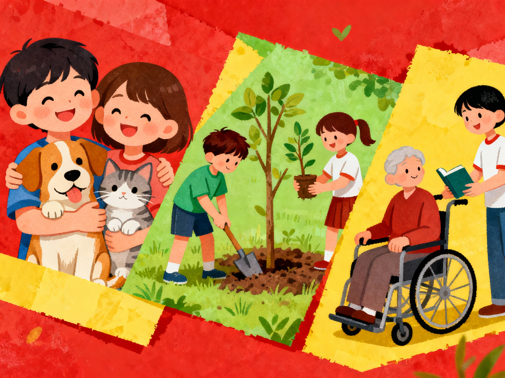
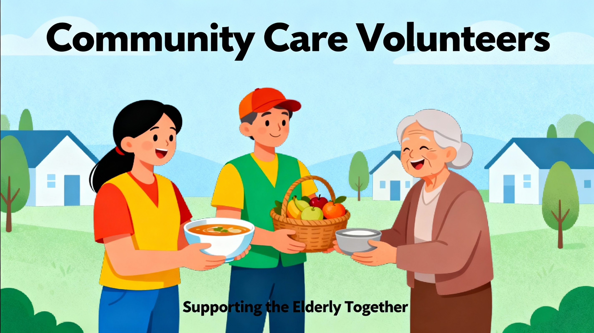

About Us
Established in 2017, Smile Group Welfare Association aims to help the needy with love and care. Registered under WB Act XXXVI of 1961.
Save earth, Save animals and help the elderly and differently abled
"Save earth, Save animals and help the elderly and differently abled" reflects the NGO's core belief that true progress is only possible when the environment and the most vulnerable lives are protected together. The NGO organises nature camps, awareness sessions and sapling?plantation drives to encourage people to conserve forests, protect wildlife habitats and keep their surroundings clean, highlighting how a healthy planet supports all living beings. It provides medicines and basic care for sick dogs, birds, monkeys and cows, and works with the forest department whenever animals are injured or in danger, following the model of wildlife rescue partnerships seen across India.?
At the same time, the NGO focuses on human dignity by supporting elderly people and those who are differently abled or mentally challenged. It donates wheelchairs and mobility aids to people with disabilities so they can move independently and participate more fully in society. Volunteers also help mentally challenged or lost individuals and aged persons to trace their homes and reunite with their families, mirroring the broader welfare role many NGOs play for vulnerable groups. Through these efforts, the NGO shows that caring for the earth, animals and people is one united responsibility, not three separate tasks.
Distribution of clothes, food, medicines and helping people who are lost to find their home

"Distribution of clothes, food, medicines and helping people who are lost to find their home" captures the heart of the NGO's humanitarian work. Through regular drives in slums, streets and remote neighbourhoods, volunteers distribute freshly cooked food and essential groceries to ensure that no one goes to sleep hungry, reflecting the role many NGOs play in fighting hunger and malnutrition. Alongside food, the NGO collects and distributes clean clothes, blankets and basic medicines, giving dignity, warmth and health support to people who are homeless, sick or living in extreme poverty, similar to several relief-oriented organizations.?
Beyond material help, the NGO focuses deeply on human connection and safety. Teams patiently speak to people who are mentally challenged, elderly or disoriented, many of whom are wandering without identity or support, and work with local authorities to trace their families and reunite them, as seen in several rehabilitation initiatives across India. In every such reunion and every shared meal, the NGO proves that compassionate action can restore hope and belonging to lives that society often overlooks.
Helping the elderly
"Helping the elderly" is one of the most meaningful ways the NGO brings dignity and comfort to vulnerable members of the community. Many older people face loneliness, health issues and limited mobility, especially when families are away or unable to support them, so the NGO's volunteers step in as an extended family for senior citizens in need. They visit elderly people regularly, offer companionship, listen to their stories and ensure that they are not isolated or neglected, echoing the supportive role many elder-care NGOs play in India.
The NGO also focuses on practical assistance that makes everyday life easier and safer for the elderly. Volunteers help them access medical check-ups, collect medicines, and accompany them to hospitals or government offices when required, similar to services provided by dedicated senior-care organizations. Wherever possible, the NGO distributes basic essentials like nutrition items, blankets and personal care products to poor or abandoned elders so they can live with greater comfort and self-respect. By combining emotional support with concrete help, the NGO ensures that older people feel valued, protected and included in the heart of the community.